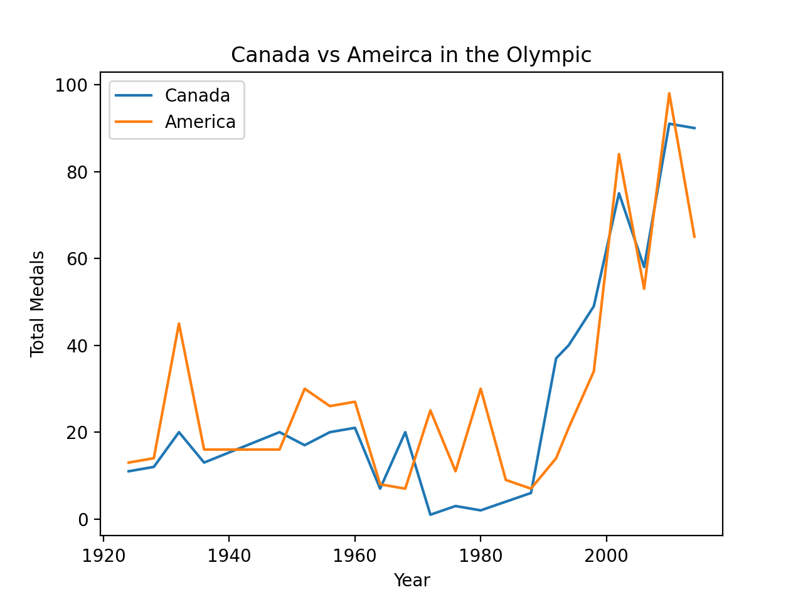
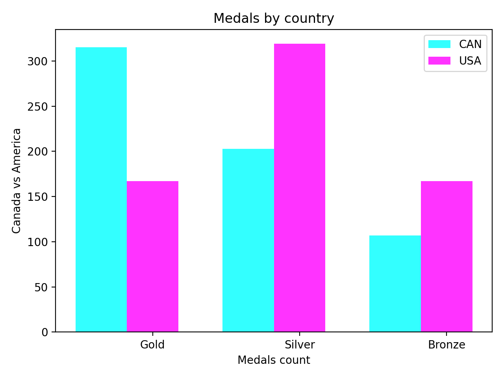

Data Point 1
Canada's medals throughout the years
Canada Olympic Medals 1924-2014

From 1924-2014, during Winter Olympic, Canada has succuesfully achieved 625 medals in total with 315 gold medals, 203 silver medals and 107 bronze medals. We are landed in Top 2 just a few less medals than America.
Canada vs America
 Although we do not have many total medals as America, you can see we have more gold medals than America which means we focus in quality more than quantity.